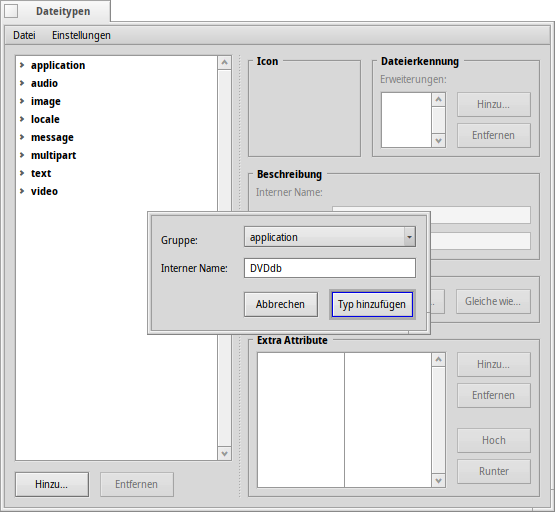
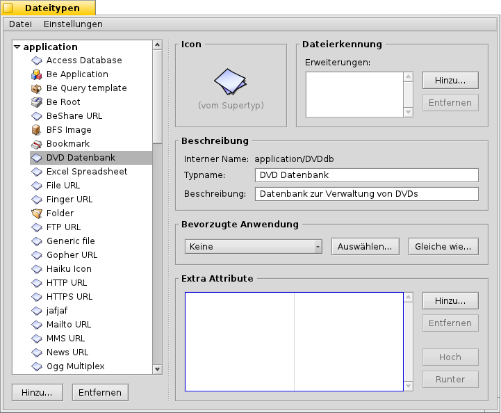
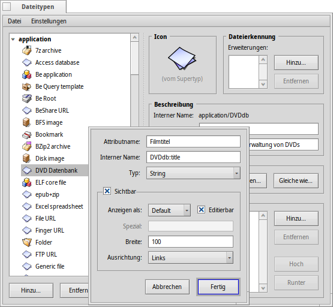
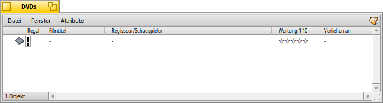
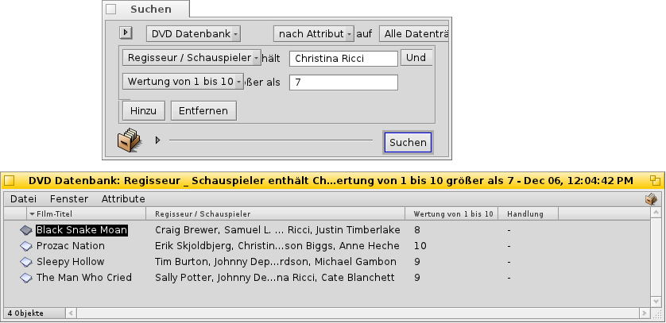

Deutsch
Deutsch Français
Français Italiano
Italiano Русский
Русский Español
Español Svenska
Svenska 日本語
日本語 Українська
Українська 中文 ［中文］
中文 ［中文］ Português
Português Suomi
Suomi Slovenčina
Slovenčina English
English| Index |
|
Vorbereitungen Erstellung des Dateityps Icon Dateierkennung Beschreibung Bevorzugte Anwendung Zusätzliche Attribute Indexing Daten eingeben Suchanfragen |
Workshop: Dateitypen, Attribute, Index und Queries
In diesem Workshop wird gezeigt, wie sinnvoll Attribute, Queries, der Index und eigene Dateitypen sein können. Als Beispiel werden wir eine DVD-Datenbank erstellen.
 Vorbereitungen
Vorbereitungen
Zuerst sollten wir uns Gedanken machen, welche Dateitypen und Attribute benötigt werden. Ursprünglich war geplant, Bookmark-Dateien mit einem Link zum Eintrag des Films in der IMDb zu verwenden. Da aber Haiku bislang noch keinen Browser hat, der mit solchen Bookmark-Dateien umgehen kann (im Gegensatz zu NetPositive unter BeOS), verwenden wir ein JPEG-Bild für das DVD-Cover.
An dieses Bild hängen wir eine Reihe von Attributen. Hier müssen wir uns entscheiden, welche Art von Attributen wir verwenden - Zahlen oder Text - und welche davon in einer Suchabfrage gefunden werden sollen.
Sinnvoll sind zum Beispiel diese Attribute:
- Film-Titel
- Genre
- URL zur IMDb
- Regisseur / Schauspieler
- Handlung
- Wertung (von 1 bis 10)
- Koordinaten im DVD-Regal, sodass die DVD auch tatsächlich gefunden werden kann.
- Wenn nötig, wer die DVD ausgeliehen hat.
Erstellung eines eigenen Dateityps
In Dateitypen klicken wir auf unterhalb der hierarchischen Liste der Dateitypen. In dem dann öffnenden Dialogfenster legen wir fest, zu welcher MIME-Gruppe der neue Dateityp gehört oder ob es sich um eine gänzlich neue Gruppe handelt. Unser Dateityp soll die interne Bezeichnung ("Interner Name") DVDdb bekommen und unter "applications" abgelegt werden.
Jetzt öffnet sich ein neues Fenster für den neu angelegten Dateityp DVDdb:

Icon
Ein Doppelklick auf das Icon öffnet Icon-O-Matic um darin ein neues Icon zu erstellen. Natürlich kann auch ein bereits bestehenden Icon in das Feld gezogen werden.
Dateierkennung
Unter "Dateierkennung" können Dateiendungen eingegeben werden, die typisch für diesen Dateityp sind. Da wir in unserem Beispiel dies nicht benötigen, wird es außer Acht gelassen.
Beschreibung
- Typname - Erscheint unter anderem im Attribut-Menü eines Tracker-Fensters.
- Beschreibung - eine etwas ausführlichere Beschreibung
Bevorzugte Anwendung
Dieses Auswahlmenü zeigt alle Anwendungen, die diesen Dateityp verwenden können. Hier kann ausgewählt werden, welches Programm gestartet wird, wenn eine Datei diesen Typs doppelt angeklickt wird.
| öffnet ein Dialogfenster zur Auswahl der Anwendung; in unserem Beispiel wählen wir Bildbetrachter um das DVD-Cover anzuzeigen. | ||
| öffnet ein Dialogfenster, in dem man eine Datei auswählen kann, die bereits die bevorzugte Anwendung verwendet, die auch hier verwendet werden soll. |
Zusätzliche Attribute
Unter "Extra Attribute" geben wir alle zusätzlichen Attribute ein, die wir oben festgelegt haben. Ein Klick auf öffnet dieses Fenster:
Attributname - Erscheint als Spaltenkopf im Tracker-Fenster
Interner Name - Wird für die Indizierung und Suche verwendet.
- Typ - Beschreibt die Art des Attributs und entsprechend wie es gesucht werden kann.
- - normaler Text
- - für die binären Werte 0 und 1
- für ganzzahlige Werte diesen Umfangs:
- : ± 255
- : ± 65,535
- : ± 4,294,967,295
- : ± 18,446,744,073,709,551,615
- - Fließkommazahlen einfacher Genauigkeit
- - Fließkommazahlen doppelter Genauigkeit
- - Zeit und Datum-Werte
- Sichtbar - Nur wenn diese Option markiert ist, kann das Attribut im Tracker gesehen / angezeigt werden; da unsere DVD-Datenbank angezeigt werden soll, setzten wir das Kreuz mit diesen Einstellungen:
- - auf "Default" (Standard) belassen. Zukünftig sind hier weitere Möglichkeiten wie Fortschrittsbalken oder Sterne geplant
- - hiermit kann das Attribut direkt im Tracker ergänzt werden
- - die Breite der Spalte des Attributs im Tracker-Fenster
- - die Ausrichtung des Attribut-Wertes in der Spalte im Tracker: linksbündig, zentriert oder rechtsbündig
Jetzt müssen diese Werte für die Attribute eingegeben werden:
| Interner Name | Attributtyp | indexed? | Beschreibung |
|---|---|---|---|
| DVDdb:title | text | yes | Film-Titel |
| DVDdb:genre | text | yes | Genre |
| DVDdb:url | text | no | URL |
| DVDdb:cast | text | yes | Regisseur / Schauspieler |
| DVDdb:plot | text | no | Handlung |
| DVDdb:rating | int-32 | yes | Wertung von 1 bis 10 |
| DVDdb:coord | text | no | DVD-Regal |
| DVDdb:lent | text | yes | Ausgeliehen an |
Indizierung
Bevor wir unsere DVD-Datenbank mit Daten befüllen, müssen wir noch einige Attribute in den Index aufnehmen. Nur so stehen sie für die Suche in Haiku, den Queries zur Verfügung.
Um mit Scott Hacker, dem Autor der BeOS-Bible zu sprechen: "Es können so viele Attribute wie nur gewünscht in den Index aufgenommen werden, Doch man sollte es nicht übertreiben." - eine sinnvolle Auswahl sollte also getroffen werden.
Wir nehmen diese Attribute in den Index auf:
| Interner Name | Attributtyp |
|---|---|
| DVDdb:title | text |
| DVDdb:genre | text |
| DVDdb:cast | text |
| DVDdb:rating | int-32 |
Um dies zu erreichen, müssen wir im Terminal die folgenden Befehle der Reihe nach eingeben:
mkindex -t string DVDdb:title mkindex -t string DVDdb:genre mkindex -t string DVDdb:cast mkindex -t int DVDdb:rating
Mit der Option -t wird die Art des Attributs festgelegt. Bis auf die Wertung (Zahl) sind alle "Text"
Daten eingeben
Nachdem nun alles vorbereitet ist, können wir damit beginnen, die Datenbank zu befüllen.
Da jeder Eintrag eine Bilddatei mit dem DVD-Cover sein soll, speichern wir zu jedem Film, den wir in die Datenbank (einem Ordner) aufnehmen eine dazugehörige JPEG-Datei.
Wenn wir den Ordner öffnen, sehen wird ein ganz normales Tracker-Fenster mit einer Bild-Datei darin. Mit einem Rechtsklick auf diese Datei und der Auswahl Add-ons | FileType setzen wir nun den Dateityp dieses Bildes auf application/DVDdb. Näheres zu den Dateitypen hier: Dateitypen
Jetzt aktivieren wir alle DVDdb-Attribute aus dem Menü und sortieren sie nach unseren Vorlieben:
Mit einem Klick auf ein leeres Attribut (oder ALT E) können wir die entsprechenden Werte eingeben. Mittels TAB und SHIFT TAB können wir von Attribut zu Attribut springen.
Um einen neuen Eintrag anzulegen kopieren wir entweder ein neues Bild in das Verzeichnis, oder wir verwenden den Menüpunkt "Datei | Neu..." indem wir eine leere Datei mit dem Dateityp "applications/DVDdb" und dem Dateinamen "DVDdb" im Ordner /boot/Benutzer/Konfiguration/settings/Tracker/Tracker Neu-Vorlagen anlegen.
Jetzt befindet sich bei eine Rechtsklick im Trackerfenster unter ein neuer Eintrag neben dem standardmäßigen "Neuer Ordner".
Suchanfragen
Nach mehreren Stunden stupidem Befüllen der Attribute haben wir nun eine kleine Datenbank, in der wir nach Herzenslust suchen können. Zum Beispiel nach allen Filmen mit Christina Ricci, die wir mit "7" oder besser bewertet haben.
Für die Suchergebnisse kann man ebenfalls eine sinnvolles Layout der Attribute festlegen.
Nachdem die Spalten im DVDdb-Ordner so eingestellt wurden, wie sie für das Suchergebnis sinnvoll sind, kopiert man diese mittels .
Darauf hin ist in /boot/Benutzer/Konfiguration/settings/Tracker/DefaultQueryTemplates ein neuer Ordner anzulegen, der nach group/filetype benannt wird, wobei der Schrägstrich durch einen Unterstrich zu ersetzten ist; in unserem Fall also "applications_DVDdb".
Öffne den neuen Ordner und kopiere das Attibute-Layout mit . Voilà:
